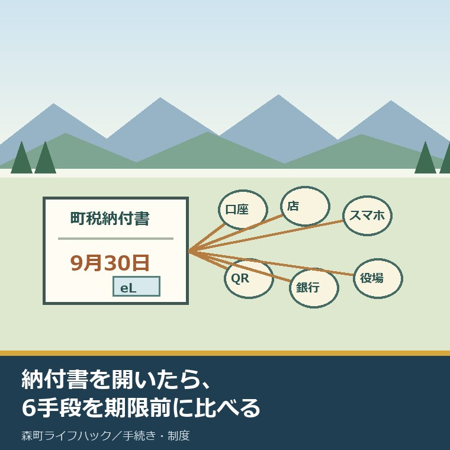
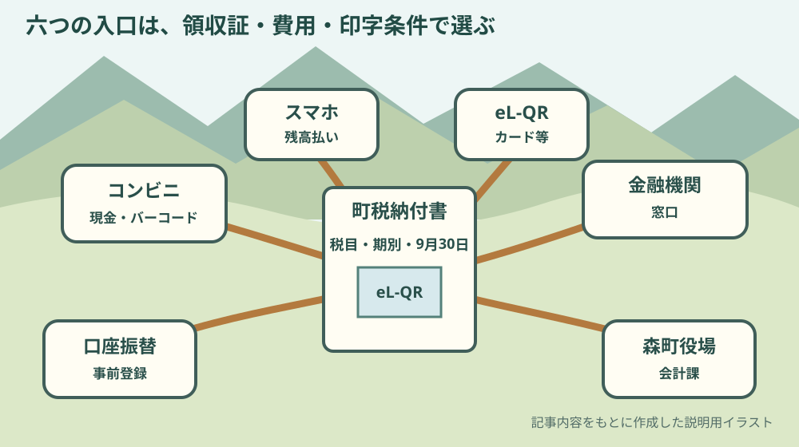
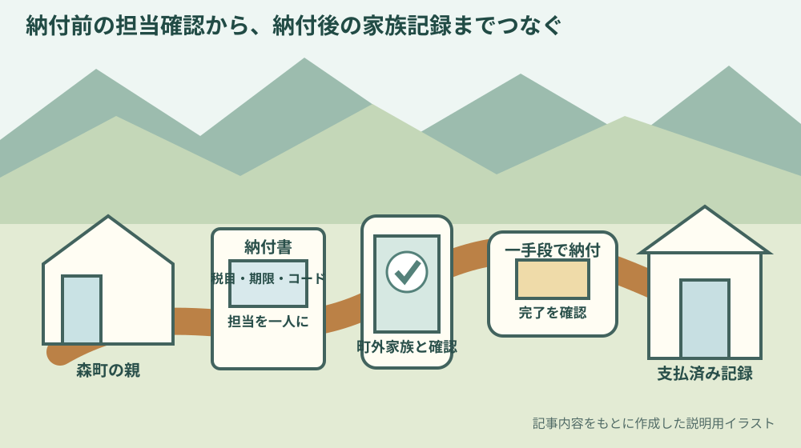

森町の町税納付方法｜9月30日前に6手段を比較

この記事の要点
Q. 森町の納付書があります。2026年9月30日までに、どの方法を選びますか。
A. 9月30日は国民健康保険税第3期の納期限です。口座振替、コンビニ現金、スマホアプリ、eL-QRのクレジット等、金融機関窓口、役場会計課の6手段があります。今日、領収証の要否と、納付書のeL-QR・バーコード印字を確認して一つ選びます。
森町から届いた納付書を前にすると、金額と納期限だけを見て、いつもの方法で払いたくなります。
しかし、森町が案内する町税の納付方法は一つではありません。ページ上の見出しで数えると六つあります。
この記事は、納付書を持つ共働き世帯と、町外から親の支払いを支える家族に向けた比較です。
2026年9月7日に、森町「納期限と納付方法」、スマホアプリ案内、令和8年度納税計画表、地方税お支払サイトを照合しました。
対象は、町県民税の普通徴収、固定資産税・都市計画税、軽自動車税、国民健康保険税の普通徴収です。
給与から差し引く町県民税の特別徴収は別の納め方です。六つの比較へ無理に当てはめません。
体験ストックには、私自身が森町でこの六つを使った記録も、相談者の納付を代行した記録もありません。払った、窓口で聞いた、親を支えたとは書きません。
ここからは公表事実と私の意見を分けます。私は、便利そうな決済名より、家計から出る総額と支払済み記録を先に見るべきだと考えます。
2026年9月30日は国民健康保険税第3期の納期限
森町の「納期限と納付方法」は2026年9月1日に更新されました。
令和8年度の表では、2026年9月30日が国民健康保険税第3期の納期限です。
9月欄に納期があるのは、掲載された四税目のうち国民健康保険税です。町県民税、固定資産税・都市計画税、軽自動車税の9月期とは読みません。
国民健康保険税の口座振替が開始済みと確認できる場合、振替日は納期限日です。2026年9月30日に口座から動く前提で残高を確認します。
町税の納期限は原則として各月末日で、12月は25日です。金融機関休業日に当たる場合は翌営業日になります。
2026年9月30日は日付どおり示されています。家族の都合で翌日に回してよいという意味ではありません。
森町の国民健康保険税の税率や減免を確認するページは、納付方法ではなく税額側を確かめたいときに使います。
金額に疑問がある話と、確定した納付書をどう払うかという話を分けると、問い合わせ先で同じ説明を繰り返さずに済みます。

森町の町税納付方法6手段を一枚で比較
六手段は、口座振替、コンビニエンスストア、スマートフォンアプリ、クレジットカード払い・インターネットバンキングなど、金融機関窓口、役場会計課窓口です。森町ページはスマートフォンアプリの見出しを「残高払いのみ」としていますが、個別アプリの現行仕様は別に確かめます。
四番目は一つの決済だけではありません。納付書のeL-QRを地方税お支払サイトで読み、クレジットカード、インターネットバンキング、ダイレクト方式、ペイジーなどから選ぶ区分です。
「六手段」と「六アプリ」は同じ意味ではありません。比較の単位を先にそろえます。
森町の一般案内には既に納付方法が整理されています。ここでは2026年9月30日、領収証、費用、町外家族という条件へ絞ります。
| 手段 | 先に見る条件 | 領収証・証明 | 費用の公表 | 9月30日前の注意 |
|---|---|---|---|---|
| 口座振替 | 事前登録、対象金融機関、残高 | 紙の領収証書は公表ページで未確認 | 利用者負担手数料は未確認 | 開始は原則、申込日の翌月末の納期から |
| コンビニ現金 | バーコード、30万円以下、未訂正 | 領収証書が必要な人の選択先として町が案内 | 利用者負担手数料は未確認 | 納期限後の納付書は利用不可 |
| スマホアプリ | eL-QRまたはバーコード。支払元はアプリごとに確認 | 納税証明書・領収証書は出ない | 森町ページは決済手数料無料と案内。アプリ内の経路別費用は個別確認 | 取扱期限、30万円、取消不可、二重払いに注意 |
| eL-QRのクレジット等 | eL-QR、地方税お支払サイト、利用登録の要否 | 同サイトは領収証書を発行しない | カードは最初の1万円まで37円、以後1万円ごと75円を加算、いずれも税別 | 完了画面・メール・口座履歴を確認 |
| 金融機関窓口 | eL-QRの有無、対応金融機関、営業時間 | 領収証書が必要な人の選択先として町が案内 | 利用者負担手数料は未確認 | eL-QRなしは取扱金融機関と地域に制限 |
| 役場会計課窓口 | 森町役場1階、平日8時30分〜17時15分 | 領収証書が必要な人の選択先として町が案内 | 利用者負担手数料は未確認 | 現金以外の支払手段は公表ページで未確認 |
納付書のeL-QR・バーコード・金額を先に見る
方法を選ぶ前に、納付書そのものを見ます。確認するのは税目、期別、納期限、金額、eL-QR、バーコードです。
コンビニはバーコードが必要です。eL-QRだけを見て、コンビニで扱えるとは決めません。
スマホアプリは、eL-QRまたはバーコードを読み取る案内です。ただし、どのコードを使えるかはアプリ側の説明も確認します。
地方税お支払サイトはeL-QRが表示された納付書で使います。納付書にない機能を後から付けるものではありません。
コンビニでは、一枚当たり30万円を超えるもの、金額訂正、バーコードなし、読取不能の納付書は使えません。
スマホアプリも、取扱期限後、金額訂正、30万円超、コードなし、読取不能は対象外です。
森町のページは、コンビニの「納期限」とスマホの「取扱期限」を別の言葉で書いています。同じ日だと推測せず、納付書の表記を答えにします。
町外の家族へ写真を送る場合は、住所や氏名を含む全面を共有する必要はありません。判断に要る欄だけを安全な方法で確認します。
口座振替は次回以降の納期を軽くする
口座振替は、納期ごとの移動と現金の持ち運びを減らせます。共働き世帯や留守がちな世帯に向くという森町の説明は具体的です。
取扱金融機関は、静岡銀行、浜松磐田信用金庫、遠州中央農業協同組合、ゆうちょ銀行の本店と支店です。
申込時は口座振替依頼書へ記入し、通帳届出印を押して、金融機関窓口または役場税務課へ提出します。
依頼書は町内金融機関と役場税務課にあり、連絡すれば送付を受けられると案内されています。
意外なのは開始時期です。原則として申込日の翌月末の納期からで、手続時期によって希望する納期限に間に合わない場合があります。
2026年9月7日に申し込めば9月30日分へ間に合う、とは一次情報から確認できません。今期の納付書を捨てず、納税係へ確認します。
残高不足時の再振替があるか、紙の領収証書が出るかも公表ページでは確認できません。家族の思い込みで翌月へ先送りしないようにします。
口座振替は今回の期限だけでなく、その後の移動負担を減らす仕込みとして考えると位置づけがはっきりします。
コンビニは現金と領収証を重視する人向け
コンビニ納付は、バーコード印字のある納付書を持参し、現金で払います。
店舗の営業時間内なら使えるため、役場や金融機関の平日時間に合わせにくい世帯には選択肢になります。
キャッシュレス決済でコンビニ納付できる、とは森町の案内にありません。「現金のみ」と明記されています。
納期限を過ぎた納付書はコンビニで使えません。9月30日を過ぎたら同じバーコードがそのまま使えると考えないでください。
森町のスマホ案内は、領収証書が必要な人や、車検などですぐ納税証明書が必要な人の選択先にコンビニを挙げています。
ただし、町の収納記録へ反映される正確な日数は確認できません。領収証書を受け取ったら、必要な手続きが終わるまで保管します。
親の分を家族が払うなら、納付前に「本人がまだ払っていない」を確認し、納付後に日付と店舗を共有します。
森町ページは「残高払いのみ」、アプリ仕様は別に見る
森町が例示するアプリはPayPay、d払い、auPay、PayBほかです。
森町の補足ページは、事前のアプリ登録と納付額のチャージが必要だと案内しています。
一方、PayBの現行公式案内では、登録した金融機関口座からの支払いに加え、eL-QRではクレジットカードにも対応すると説明されています。森町の「残高払いのみ」という区分名だけで、全アプリの支払元を一括りにできません。
納付書のeL-QRまたはバーコードを読み、アプリの画面表示を納付書の税目、期別、金額、名義と照合してから支払います。
森町ページは決済手数料無料、通信料は利用者負担と案内しています。ただし、PayBのeL-QRでクレジットカードを選ぶ場合はシステム利用料がかかるため、使うアプリと支払元の最終画面で費用を確認します。
納税証明書と領収証書は発行されません。紙を家族ファイルへ残す必要があるなら、便利さだけで選ばない方がよい場面があります。
支払後の取消しと変更はできません。支払済みの納付書をもう一度読まないよう、完了画面を確認し、納付書へ支払日を記します。
パソコンとフィーチャーフォンからは利用できません。町外家族が自分のスマホで親の納付書を読む場合も、納付者名と対象期を先に読み合わせます。
既に口座振替を使っている人がアプリへ替えるには、口座振替を止め、納付書を発行する手続きが必要です。二つを同時に走らせません。
eL-QRのクレジット等はシステム利用料を見る
納付書にeL-QRがあれば、地方税お支払サイトからクレジットカード、インターネットバンキングなどを選べます。
対象は、町県民税の普通徴収、固定資産税・都市計画税、軽自動車税、国民健康保険税の普通徴収です。
クレジットカード払いにはシステム利用料がかかります。最初の1万円まで37円、以後1万円ごとに75円が加算され、いずれも税別です。
納税額だけで比較すると、この利用料を家計から見落とします。カードのポイントが必ず上回るとも決められません。
地方税お支払サイトの区分には、インターネットバンキング、ダイレクト方式、ペイジーもあります。
インターネットバンキングは金融機関側の事前登録、ダイレクト方式はeLTAXの利用者登録と口座登録が必要です。9月30日当日に初めて準備する前提にしません。
同サイトは領収証書を発行しません。カード明細、口座履歴、完了メールなど、選んだ方法に応じた支払実績を確認します。
森町の収納記録や納税証明書へ反映される正確な日数は公表ページで確認できません。証明書がすぐ必要なら納税係へ先に聞きます。
金融機関窓口と役場会計課は紙を残したい日に使う
金融機関窓口は、納付書にeL-QRがあれば全国のeL-QR対応金融機関を利用できます。
eL-QRがない場合は、静岡銀行、浜松磐田信用金庫、遠州中央農業協同組合、清水銀行の本店と支店が案内されています。
ゆうちょ銀行と郵便局は、静岡県、愛知県、岐阜県、三重県内に限るという地域条件があります。町外家族は所在地を確認します。
役場では1階の会計課窓口で納付できます。役場全体の開庁時間は平日8時30分から17時15分です。
会計課窓口で現金以外の何が使えるかは指定ページで確認できません。カードが使えるだろうと考えて来庁しないようにします。
森町は、領収証書が必要な人と、すぐ納税証明書が必要な人の選択先に金融機関窓口と会計課窓口を挙げています。
それでも、収納反映の時刻を個別に保証する記述ではありません。証明書を使う日、税目、納付予定場所を納税係へ伝えます。
町外の家族が支えるときは二重払いを防ぐ
親の納付書を町外の家族が支える場合、払える技術より、誰が未納を確認するかが先です。
本人の口座振替、本人のスマホ、家族のスマホ、別の家族のコンビニ納付が重なると、善意でも二重払いが起こり得ます。
支払担当を一人に決め、ほかの家族は納付書を読み取らないという線を引きます。
実家の固定資産税の通知先を整える記事は、誰の家へ紙が届くかを扱います。通知先を整えた次に、今回の支払担当を決めます。
令和8年度住民税の扶養判定を一枚で確認する記事は、税額の前提を家族で確かめるときに使います。
納付後は、年度、税目、期別、名義、納付日、方法、支払担当を残します。カード番号やアプリの暗証情報は共有しません。
納付済み記録を年度・税目・名義で並べれば、領収証が出ない方法も支払履歴と納付書を結び付けられます。
スマホの完了画面だけを一人の端末へ残すと、機種変更や故障で家族が追えません。秘密情報を除いた確認項目を家族台帳へ写します。
良い点：生活時間と場所に合わせて六つから選べる
良い点は、平日の窓口へ行けない人にも、コンビニとオンラインの入口があることです。
eL-QR付きなら、町外の対応金融機関や地方税お支払サイトも候補になります。森町内だけへ移動を閉じなくてよい仕組みです。
領収証書が必要な人には対面の選択肢があり、移動を減らしたい人には口座振替やオンラインがあります。
町の人は、納付書を保管し、金額を用意し、口座残高を見て、家族へ連絡する負担を既に払っています。
金融機関、コンビニ、役場の職員も、紙と収納記録をつなぐ仕事を支えています。その負担を先に認めたいと思います。
六手段は負担をゼロにしませんが、勤務、移動、家族の距離が違う世帯へ逃げ道を用意しています。
注文したい点：領収証・手数料・反映時期を同じ表にしてほしい
その上で、森町の案内は、六手段の条件が別々の段落や別ページに分かれています。
領収証の有無、利用者負担手数料、収納記録への反映日数、納税証明書を取れる時期を、一つの比較表で見たいところです。
口座振替、コンビニ、金融機関、会計課の利用者負担手数料は、指定ページから確認できません。
役場会計課で現金以外の支払手段を使えるか、残高不足の再振替があるかも明記されていません。
六つあるだけでは選べない。領収証が要るか、納付書にeL-QRかバーコードがあるか、9月30日に間に合うかを同じ表で見せなければ、家族は動けない。私はそう考えます。
私は「スマホなら最も早い」と書きたくなります。しかし、領収証が出ず、取消しもできない以上、全世帯へ一律には勧められません。
オンライン決済の操作完了と、町の収納記録への反映も同じ時刻とは限りません。一次情報に日数がないため、早さを順位付けしません。
比較表があれば、住民の電話確認を減らし、納税係の説明負担も減らせます。便利さの宣伝より、選ぶ条件の明示が実務です。

対案・結論：今日、納付書の印字を三か所囲む
今日できる小さな一歩は、納付書を一枚だけ机に出し、税目・納期限・コード欄の三か所を鉛筆で囲むことです。
税目は「国民健康保険税」、期別は「第3期」、納期限は「2026年9月30日」かを実物で確かめます。
次にeL-QRとバーコードの有無を見ます。両方、片方、読取不能のどれかで候補が変わります。
領収証書が必要なら、その条件を一行目に書きます。不要なら、移動、手数料、準備時間を比べます。
口座振替を今から申し込む人は、9月30日分が自動で落ちると決めません。今期を別の方法で払うか納税係へ聞きます。
家族が支えるなら、支払担当者名を一人だけ書きます。納付が済むまでほかの人は決済操作をしません。
今日中に払う必要はありません。納付書の条件が見え、六手段から使えないものを外せれば、次の行動は小さくなります。
払えない事情があるときは期限前に納税係へ伝える
六手段を比べても、家計に納付額を用意できない事情は解決しません。支払方法と支払可能性を混同しないことが大切です。
期限を過ぎるまで納付書を伏せると、家族も役場も状況を組み直しにくくなります。
森町税務課納税係の電話番号は0538-85-6310です。税目、期別、納期限、用意できない理由、連絡可能な時間を伝えます。
個別にどの扱いになるかは、この記事では判断できません。分割や猶予が必ず認められるとも書きません。
森町で町税・国保税が払えないときの相談順で、相談時にそろえる内容を確認できます。
町内の移動が難しい、町外家族しか担い手がいない、郵便物が散らばるという事情も、支払担当を決めるうえで具体的に伝えます。
大石の視点：便利さより家計と確認記録を先に置く
大石浩之（磐田市／不動産業）として、森町が町税の納付入口を六つ示していることは良いと考えます。
一方で、決済名が増えるほど、親、町外家族、窓口の誰が支払済みを持つか分かりにくくなります。
町の人は既に、納付書の管理、家計のやり繰り、平日の移動、スマホ操作という努力をしています。
その努力を認めた上で、打開が要るのは移動と担い手です。一人の親と一人の職員の記憶だけでは、毎年の納期を回し続けられません。
収納記録、領収証、オンライン履歴を家族が照合できる形に保つ維持費もあります。便利な入口を増やすだけで終わりではありません。
私には森町で六手段を使った体験がありません。ここからは、家計と家族の段取りを見る事業者としての意見です。
最初に選ぶのはアプリではなく、「領収証が要る」「9月30日まで」「担当は一人」という三条件です。
この三条件が決まれば、使えない手段が先に落ちます。残った中で移動と費用を比べれば、決済の流行に振り回されません。
納付完了だけを成果にせず、次の家族が年度・税目・名義から支払済みを追える記録まで残すべきです。
まとめ：9月30日に間に合う一手段を選ぶ
2026年9月30日は、森町の国民健康保険税第3期の納期限です。
六手段は、口座振替、コンビニ現金、スマホアプリ、eL-QRのクレジット等、金融機関窓口、役場会計課窓口です。
口座振替は申込直後に始まるとは限らず、スマホと地方税お支払サイトは領収証書が出ません。方法ごとの差を先に見ます。
納付書の税目・納期限・コード欄を三か所囲み、領収証の要否と支払担当を一人決める。今日の一歩はそこまでで十分です。
よくある質問
Q1. 森町の町税はどの6方法で納付できますか。
A1. 森町の案内にある6区分は、口座振替、コンビニエンスストアの現金払い、スマートフォンアプリ（森町ページ上の見出しは「残高払いのみ」）、eL-QRを使うクレジットカードやインターネットバンキング等、金融機関窓口、森町役場1階会計課窓口です。PayBなどは支払元と費用を各アプリの現行案内でも確認します。
Q2. 9月30日の国民健康保険税第3期を今から口座振替にできますか。
A2. 口座振替の開始は原則として申込日の翌月末の納期からで、手続時期によって間に合わない場合があります。2026年9月7日の新規申込が9月30日分に間に合うとは公表資料で確認できません。今期の納付書を別の方法で払う必要があるか、税務課納税係へ確認してください。
Q3. スマートフォンアプリで納付すると領収証は出ますか。
A3. 森町は、スマートフォンアプリ納付では納税証明書と領収証書を発行しないと案内しています。領収証書が必要な人や納付後すぐ納税証明書が必要な人には、コンビニ、金融機関窓口、役場会計課窓口を案内しています。二重払いを避けるため、完了画面と支払日を家族の記録へ残してください。
参考にした公式情報
- 納期限と納付方法／静岡県森町（2026年9月1日更新。令和8年度の納期限、対象税目、六つの納付区分、口座振替、コンビニ、オンライン、金融機関、会計課の条件を2026年9月7日に確認）
- スマホアプリで町税が納付できます／静岡県森町（2023年4月1日更新。対象税目、読取条件、領収証、費用、取消不可、口座振替からの変更を2026年9月7日に確認）
- 令和8年度 町税等の納税（納付）計画表／静岡県森町（2026年9月30日の国民健康保険税第3期を2026年9月7日に確認）
- 各種お支払手順／地方税お支払サイト（クレジットカード、インターネットバンキング、ダイレクト方式、ペイジーの準備と確認方法を2026年9月7日に確認）
- PayB公式サイト（金融機関口座からの支払いと、eL-QRで選べる支払元・費用を2026年9月7日に確認）

磐田市で小さな不動産業を営みながら、森町の空き家・農地・実家じまいの相談を受けています。地域と不動産実務をつなぐ目線で確認の順番を書きます。
最終確認日：2026-09-07 ／ 森町スマホ案内の「残高払いのみ」とPayBの現行公式仕様には食い違いがあります。口座振替等の手数料と紙の領収証、収納反映日数、9月7日の新規口座申込が9月30日分へ間に合うか、残高不足時の再振替、役場会計課の現金以外の支払手段、アプリごとの上限も公開資料で確認できていません。個別の納付書を手元に森町税務課納税係0538-85-6310へ確認してください。